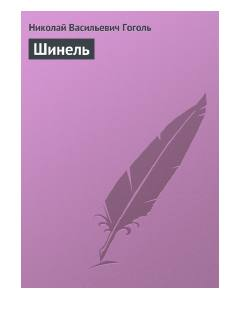

Ш"Kichik odam" obrazining fojiasi aks etgan mashhur rus mumtoz qissasi.
Nikolay Gogolning ushbu mashhur qissasida jamistdagi adolatsizliklar va "kichik odam" – Akakiy Akakiyevich Bashmachkinning og'ir taqdiri fosh etiladi. Asar oddiy amaldorning huquqsizligi va uning hayotidagi fojiali o'zgarishlarni ochib beradi. Mazkur kitob maktab o'quv dasturlari va mumtoz adabiyot ixlosmandlari uchun tavsiya etiladi.